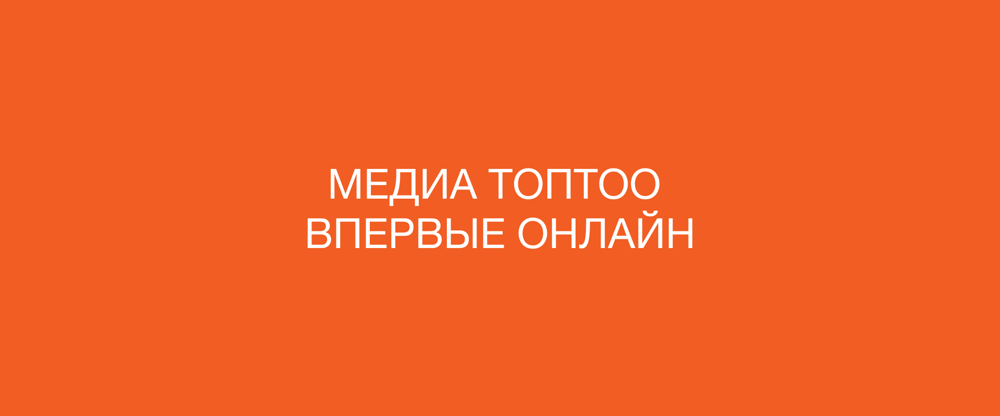
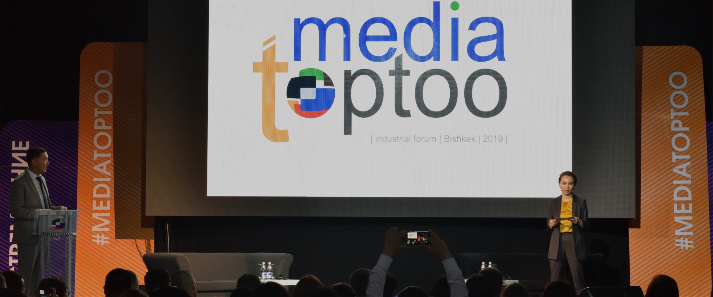

- 

Media TopToo
Industrial
Forum 2020
- 
Media TopToo
Industrial
Forum 2020


КАТТОО ЖАБЫК
- :
КҮН
СААТ
МҮНӨТ
СЕКУНДА
- медиа чөйрөнүн кесипкөй адистери менен биргеликте жол табуу үчүн
- жана да бардык форматтагы ММКлардын жаңы шарттарга ылайыкташуусунда колдоо көрсөтүү үчүн
- онлайн форматта форум өткөрүп жатабыз

- онлайн каттоодон өтүп алгыла;
- каттоо 22-апрелде саат 12:00дө Бишкек убактысы менен жабылат;
- тандоодон өткөндөр 23-апрель күнү каттоо формасында көрсөткөн электрондук дарегине билдирүү алышат;
- форум күндөрү, 25 тартып 29-апрелге чейин күнүнө эртең менен почтаңызга сиз каттоо формасында белгилеген сессияларга чакыруу жөнөтүлөт;
- билдирүү-чакыруудан сессияга уникалдуу шилтемени, кирүү кодун жана сырсөзүн, ошондой эле ZOOM платформасы боюнча нускаманы табасыз;
- онлайн-форумду ар кыл себептерден улам өткөрүп жиберген катышуучуларга Facebook тармагындагы Internews in Kyrgyzstan баракчасында түз көрсөтүү жеткиликтүү болот;
- бардык чыгып сүйлөгөн сөздөрдүн видеожазуулары кыргызча титрлери менен форумдан кийин «Презентациялар» бөлүмүндө жана КРдагы Интерньюстун Youtube-каналында жеткиликтүү болот.
Интерньюс тарабынан уюштурулган Кыргызстандын кесипкөй журналистика
жаатындагы ар жылдык сынак.
«Умтулуу-2020» номинациялары:
Бийлик жана коом.
Балалыкты коргоо.
Тынчтык жана ынтымак.
Маданият жана агартуу.
Кол кабыш кылуу убакыты.
Аракеттеги адам.
Адам укугун коргоо темасына берилгендигин кесиптештери тарабынан колдоосу
(сынактын атайы номинациясы).
Бул жылы КРдеги Интерньюстун Өкүлчүлүгү кыргызстандык журналистиканы өнүктүрүүгө кошкон чоң салымы үчүн «Таиржан Турсуналиевдин атындагы атайын сыйлыкты» негиздеди.
"Умтулуу-2020" Улуттук сыйлыктын жеңүүчүлөрүн сыйлоо аземи
COVID19 боюнча карантин бүткөндөн кийин өткөрүлөт.
Убакыты жана өткөрүлө турган жери туурасында кошумча маалымдайбыз.
ИНТЕРАКТИВДҮҮ СЕССИЯЛАРДЫН БОЛУШУ КҮТҮЛӨТ!

Арсений Ашомко

ВИНОУ жарнак агенттигинин ээлеринин бири.
Digital- жана медиарыногунун эң тажрыйбалуу спикерлеринин бири, MEH (Marketing, Edutainment, Humor), «МЕХиКо» конференцияларынын кошо негиздөөчүсү жана режиссеру, «Спасибо, очень интересно!» жалпыга чыгып сүйлөө жана презентациялар студиясынын режиссеру.
Social Media рыногунда 2009-жылдан бери.
Биринчи кейси - «Счастливый Фермер» оюнуна «УРАЛСИБ» банкын интеграциялоо болгон.
Socialist Group алкагында Pepsi, Dirol, NIVEA, UniCredit Bank, Raffaello ж.б. креативдүү директор, стратег катары жана башка ар кыл кызматта иштеген.
2014-жылдын жаз айларынан тартып 10 платформадагы (социалдык тармактардан тартып мобилдик тиркемелерге чейинки) 45 миллион катышуучусу бар tigermilk - ондогон тематикалык долбоорлорун (Bon Appétit, Workout, «Шпильки», «Якорь», «Любящие Мамы», «Шедевры Рекламы» ж.у.с.) камтыган мультиканалдуу медиакомпанияны башкарып келген.
2018-жылдын жаз айларынан 2019-жылдын жай айларына чейин «ВКонтакте» медиапродуктуларын өнүктүрүү боюнча директор кызматын ээлеген.
Никита Белоголовцев

Яндекс.Дзен» платформасында сторителлинг багытынын жетекчиси.
Москва мамлекеттик эл аралык мамилелер институтунун (МГИМО) эл аралык журналистика факультетин бүтүргөн.
«ТВ-Центр», «Дождь», «Россия-2» телеканалдарында көбүнчө спорттук жана сейрек түрдө саясий серепчи болуп иштеген. ТЭФИ сыйлыгына спорттук программанын мыкты алып баруучусу катары номинацияланып, “Маяк” радиосундагы “Первый отряд” аттуу мыкты маанайшат радиошоусу үчүн “Золотой микрофон" сыйлыгына ээ болгон. Балдарга билим жана тарбия берүү жөнүндөгү mel.fm сүймөнчүккө ээ сайтын түзгөн.
Учурда «Яндекс.Дзен» платформасында сторителлинг багыты боюнча жетекчилик кылып келет. Достору менен биргеликте "Спасибо, очень интересно" студиясын негиздеген, аталган студия жаркын диджиталдуу конференцияларды, контент жана жалпыга чыгып сүйлөө боюнча кызыктуу курстарды өткөрүп келет.
Дина Маслова

Журналист, kaktus.media жана kaktakto.com сайттарынын негиздөөчүсү
2006-жылы «Вечерний Бишкек» гезитинин корреспонденти катары эмгек жолун баштап, 2008-жылдын январынан тартып аталган редакциянын атайы корреспонденти болгон.
2009-жылы экономикалык серепчи кызматын ээлеп, ал эми күзүндө гезиттин интернет редакциясын жетектеп калган. 2015-жылы zanoza.kg сайтынын негиздөөчүлөрүнүн бири.
2012-жылдан тартып 2017-жылга чейин «Red Jolbors Fest» эл аралык жарнак фестивалынын директору жана уюштуруучуларынын бири болгон.
Кыргызстан жана КМШ өлкөлөрүнүн журналисттери үчүн медиа-семинарларда сөз сүйлөп чыгат.
Жанна Шегай

Стратегиялык башкаруу жана менеджменти боюнча адис.
Уюмдарды кросс-функционалдуу башкаруусу боюнча кеңешчи, КРдагы Интерньюстун “Медиа-К” долбоорунун стратегиялык башкаруу жана менеджменти боюнча адис.
Глобалдуу жана жергиликтүү бренддер менен ар кыл сегменттерде – премиумдан тартып жакырчылыктын ары жагында жашагандар жааттында 15+ жылдык тажрыйбага ээ.
Маркетинг, финансы, стратегия жана сатуулар ортосунда уюштуруучулук сапатка ээ. Ар кыл маданияттар чөйрөсүндө бизнести башкаруу боюнча магистр.
Рахат Асангулова

«Азаттыктын» долбоорлордун автору
2015-жылы Жогорку экономика мектебинин медиакоммуникация факультетин бүтүргөн.
2014-жылдан бери “Азаттык” радиосунун орусча сайты үчүн тексттерди (тасмаларга сереп) жазган, 2017-жылдан тартып теле жана радиопрограммаларды (буга чейин өнүкпөй калган долбоорлору - “Выход в люди”, “Наивный подкаст”), учурда – “Картина маслом” долбоорун (дээрлик 50 чыгаруу, 2018-жылдан тартып НТС каналы көрсөтүп келет) өндүргөн.
Чакан жайда баарлашууну жакшы көргөндүктөн интервью жанры менен алектенет. Кесиптеги эң негизги суроо – негизинде бул кесиппи?
Елена Нечаева

Журналист, «Апрель ТВнын» продюсери
Журналист, продюсер, телеканалдын маалыматтык кызматынын шеф-редактору, алып баруучу, документалдык тасмалардын автору, блоггер, сүйүктүү ЧерныйЯщикБелыйШум YouTube каналынын негиздөөчүсү жана алып баруучусу. “Апрель-ТВ” жаңы медиасынын жетекчилеринин бири, шеф-редактору жана продюсери.
2019-жылдардагы окуялардан кийин тез өнүккөн “Апрель” телеканалы эфирге чыгуу мүмкүнчүлүгүн жоготуп, онлайн-катышуусун өнүктүрө баштаган. Лидерлердин бири катары Еленага командасы менен биргеликте канал ишин толугу менен кайра тууралоого, интернет-платформалардын алгоритмдерин изилдеп, аналитикага үйрөнүүгө туура келди.
Кыска мөөнөттү ичинде “Апрель” командасы жаңы форматка өтүп, менеджмент мамилелерин өзгөрттү. Учурда канал өзүн камсыздоо максатында продакшн багытты, тактап айтканда коммерциялык негиздеги видеоконтенттерди өндүрө баштады.
Александр Шкаровский

Медиаменеджер
Александр Шкаровский – медиа рыноктун ири операторлорунун чечкиндүү, татаал жана да чукул маселелерин чечүүдөгү белгилүү адис.
Ал медиа продукт өндүрүүчүсү менен бир катар жарнак рыногунун катышуучуларына бирдей жогору дивиденддерди жана шериктештиктин бекемделишин алып келген стандарттуу эмес чечимдерди ийгиликтүү ишке ашыруусу менен белгилүү болгон.
Учурда ал - «H Sport Медиа» жарнак агенттигинин башкаруучу шериги жана Havas Creative Group Ukraine жарнак тармагында бизнести өнүктүрүү боюнча директору, бул кызматта ал Украинадагы медиа, жарнак жана маркетинг жаатындагы 20 жылдык кесипкөй ишмердүүлүгүндө топтогон билимин, жөндөмдөрүн жана байланыштарын күнүгө колдонуп келет.
Ал жылдык биллинги $5 миллиондон жогору келген ийгилик мисалдары менен, ошондой эле, аны инсан катары көтөрүлүүсүнө жол берген долбоорлордогу олуттуу таасири бар кыйын тажрыйбасы менен да бөлүшүүгө даяр.
Равшан Личаню

TV1KG телеканалынын продюсери
Телекөрсөтүүдөгү маанайшат долбоорлорунун чебери. Чыгармачыл жолун «Ачекей» студиясын жана 1998-жылы НБТ каналында жума сайын чыгуучу «Пятый Элемент» теледолбоорун түзүүдөн баштаган.
«Автомир», «Биоритм» программаларын, ошондой эле «Очарованный Странник» аттуу саякаттар туурасында алып барууну чыгаруучу «Ракета ТВ» чыгармачыл бирикменин негиздөөчүсү катары белгилүү.
Анын «Отдыхай!» жана «Пятый Элемент» аттуу программалары Москвадагы «Лучшая молодежная программа Содружества» сынагында Гран-при катары белгиленген. 2001-жылдан тартып «АЛА ТВ» тармагында «Ракета ТВ» кабелдик каналын ишке киргизген.
2010-жылдан тартып «Бешинчи каналдагы» «Утро на Пятом» түз эфир шоусунан баштаган, ошондой эле НБТ жана «ТАН» (Алматы) телеканалдарындагы түз жана түнкү эфирлерде алектенген.
2014-жылдан тартып азыркы күнгө чейин көрүүчүлөргө «Вечер Трудного Дня» шоу-программасы жана «Свой среди чужих», «Пестрая лента», «Будь в курсе» теледолбоорлору аркылуу белгилүү болгон TV1KG Бишкек шаардык телеканалынын продюсери.
Бектур Искендер

kloop.kg негиздөөчүлөрүнүн бири, блогер
Бектур Искендер өлкөнүн алдыңкы көз карандысыз инернет-ресурсунун негиздөөчүлөрүнүн бири.
TED конференциясында сөз сүйлөгөн Борбор Азиядан чыккан биринчи адам.
Кыргызстандагы космостук программанын жана биринчи спутникти куруу аракетинин демилгечиси.
Урмат Насыкулов

Социалдык ишкер
Урмат Насыкулов – коомдук активист, Кыргызстандагы дени сак жашоонун үгүтчүсү.
Ал түзгөн "Тонус" Коомдук фонду жалпы спорттук жана билим берүүчү иш-чараларды уюштуруу менен алектенет. Урмат – көптөгөн марафондук жарыштардын уюштуруучусу.
Коронавирус боюнча карантиндин башынан тартып муктаж адамдарга колдоо көрсөтүүчү волонтерлорду бириктирген «Биз барбыз» Элдик штабынын кошо түзүүчүсү болду.
Жюри

Председатель жюри
Председатель правления ОО «Журналисты», член Комиссии по рассмотрению жалоб на СМИ в КР, медиатренер.
Он имеет большой опыт работы на ТВ и в телепроектах. Был ведущим информационной программы "Жаңылыктар" и аналитической программы «Апта» на ТРК «КООРТ», редактором новостной службы на этом канале.
Работал ведущим программы «Мейкин Азия», которая создавалась в начале 2000-х годов при поддержке Интерньюс Нетуорк для всего Центральноазиатского региона.
Был обозревателем и специальным корреспондентом на ТРК «НТС», заместителем директора в ОФ «ДООР Медиа», член Художественного совета КТРК.

Журналист, профессор департамента медиа факультета коммуникаций, медиа и дизайна, директор Центра цифровых культур и медиаграмотности Национального университета «Высшая школа экономики» (Москва).
Обозреватель «Радио Свобода» (1993-2012), член Совета по присуждению государственных премий в области СМИ при правительстве России, заведующая кафедрой ТВ и РВ факультета журналистики МГУ (2006-2011), декан факультета медиакоммуникаций НИУ ВШЭ, член Академии российского телевидения.
Автор более сотни публикаций в научных и популярных изданиях в РФ и за рубежом, один из авторов учебников «Телевизионная журналистика» (МГУ) и «Мультимедийная журналистика».
Директор Всероссийского конкурса региональных российских телекомпаний «Новости – время местное», получившего в 2001 году премию «ТЭФИ» в номинации «Событие года».

Главный редактор международного проекта Russia Beyond, сооснователь агентства MediaToolbox, ведущий рубрики о новых медиа в журнале «Журналист».
Редакция Russia Beyond рассказывает о России на 14 языках для ежемесячной аудитории с охватом до 40 млн человек.
MediaToolbox консультирует СМИ и другие компании, помогая им развивать коммуникации и повышать эффективность работы в цифровой среде.

С 2007 года возглавляет Национальный филиал МТРК "Мир" в КР.
Профессионально занимается журналистикой с 1995 года. В качестве корреспондента работала при освещении важнейших исторических событий в КР.
MediaToolbox консультирует СМИ и другие компании, помогая им развивать коммуникации и повышать эффективность работы в цифровой среде.
Будучи главным редактором, занималась организацией работы информационной службы ТРК "Пирамида" при освещении Аксыйских событий 2002 года и всех последующих гражданских акций.
Принимала активное участие в продвижении идеи общественного телевидения в Кыргызстане.
В 2002-2003 годах проводила первые журналистские расследования по проблемам трудовой миграции и торговле людьми (документальные фильмы «Гастролеры» и «Без лица»).
Также была ведущей предвыборных дебатов на президентских выборах 2009 года, парламентских выборах 2010 года и президентских выборах 2011 года.
Медиатренер по основам фотографии. Имеет диплом профессионального фотографа Нью-Йоркского Института Фотографии. Публиковался в различных онлайн и «бумажных» изданиях.
В 1999 году принимал участие в создании конкурсных работ для 9-го Московского фестиваля рекламы. Созданные рекламные ролики заняли призовые места в различных номинациях.
До 2004 года привлекался в качестве тренера и ассистента в проекты Интерньюс.
Участвовал в технической экспертной группе при МКИТ КР по переводу телевещания республики в цифровой формат (2015-2017 гг).
Медиаэксперт, консультант Интерньюс по проектам в Евразии, член Академии российского телевидения с 2001 года.
Руководила организациями Интерньюс Нетуорк в России, Европе. Лауреат премии «Медиаменеджер России» 2002-го в специальной номинации «За особые заслуги в развитии медиабизнеса». Была членом Федеральной конкурсной комиссии Министерства Российской Федерации по делам печати, телерадиовещания и средств массовых коммуникаций (МПТР).
Манане Асламазян - дважды лауреат премии «ТЭФИ», последняя была вручена в 2010 году «За личный вклад в развитие российского телевидения».

Десять лет проработал в ряде печатных и онлайн-СМИ политическим обозревателем. Был заместителем главреда «Вечернего Бишкека», главредом «Белого парохода», «Комсомольской правды - Кыргызстан», «Чалкан.kg», редактором сайта радио «Азаттык». После завершения журналистской деятельности стал специализироваться в медиатренерской работе и медийно-информационном консультировании.
Основатель авторского образовательного проекта — медиатренингового центра «Мастер-класс», бывший председатель общественного объединения «Журналисты». В настоящее время советник по контенту в Представительстве Интерньюс в КР.

Медиаспециалист с 20-летним опытом работы в СМИ, НПО и международных организациях. Была и репортером, и продюсером, и ведущей телепрограмм. Награждена медалью «Данк» за освещение баткенских событий 2000 года.
Более 15 лет ведет медиатренинги на кыргызском и русском языках, разрабатывая при этом учебные методики, модули и программы для обучения журналистов различного уровня профессиональной подготовки.
В рамках проекта «Медиа-К» работает координатором Тренингового центра Интерньюс в КР и советником по производству и контенту.

Опытный журналист с почти 30-летним стажем работы в ведущих СМИ бывшего Союза, России и Кыргызстана.
После окончания факультета журналистики МГУ сотрудничала с местными печатными изданиями. Три года проработала в кыргызском отделении информагентства АПН (ныне РИА НОВОСТИ) и более 10 лет была собкорром и официальным представителем российского агентства «Интерфакс».
Стажировалась на курсах Фонда Reuters в Лондоне, проходила практику в департаменте общественных связей ООН в Нью-Йорке. Более 12 лет трудилась в качестве спецкорреспондента, обозревателя и колумниста в газете «Вечерний Бишкек».